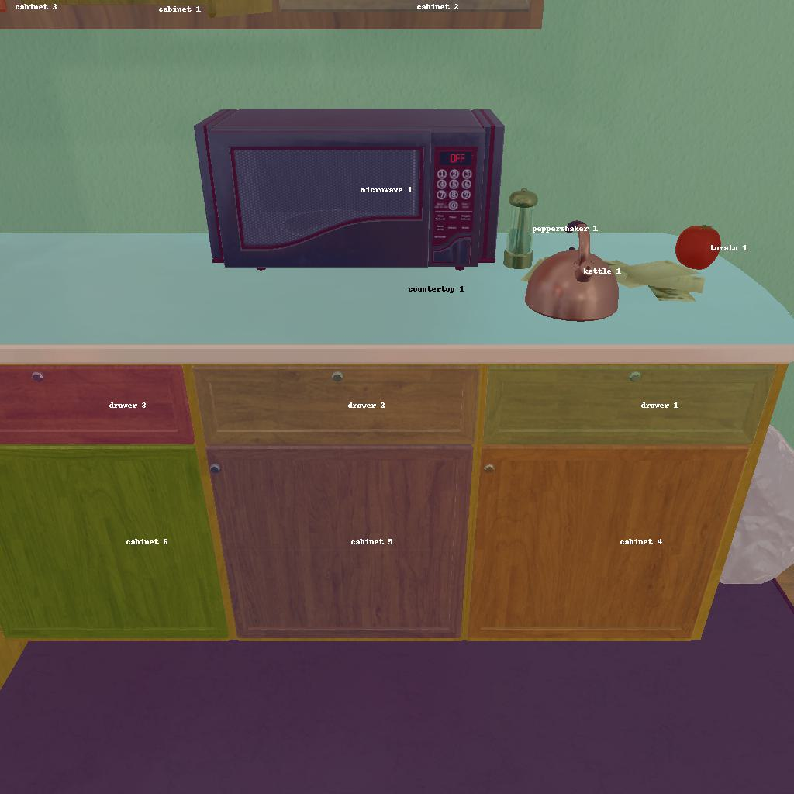

---------------------------------------------------------task: 24---------------------------------------------------------
--------------------------------------------------------------------------------------------------------------------------------------------------------------------
--------------------------------------------------------------------------------------------------------------------------------------------------------------------
Step:--------------------------------------------------------------------------15-------------------------------------------------------------------------------
----------------------------------------
VLM Prompt:
Image1:
Image2:
Image3:
**Instruction**
1. Analyze the provided image to identify all visible household objects, focusing on those relevant to the task description "put a hot tomato in fridge."
2. Use the analysis of the image and the task hint "The agent must find an object of the desired type, pick it up, go to a microwave, heat the object with the microwave, then find the correct location to place it, and put it down there. The agent does not need to use the microwave button or open the microwave to heat the object, and the agent just needs to do action that is "heat the object with the microwave"." to answer the question: what is the most reasonable action in the choices for the task description "put a hot tomato in fridge"?
4. Decide and write the answer using the template: The answer is: (i): , where i is the real number. If there is no desired object in the image, search every place based on **Initial Observation** to find the object. And if no one is exactly correct, choose a similar answer.
**Initial Observation**
You are in the middle of a room. Looking quickly around you, you can see cabinet (1-14), countertop (1-2), microwave (1), drawer (1-5), sink (1), sinkbasin (1), coffeemachine (1), stoveburner (1-4), toaster (1), fridge (1), diningtable (1), garbagecan (1), safe (1)
**Answer Choices**
(1): go to cabinet 1
(2): go to cabinet 2
(3): go to cabinet 3
(4): go to countertop 1
(5): go to cabinet 4
(6): go to cabinet 5
(7): go to microwave 1
(8): go to drawer 1
(9): go to drawer 2
(10): go to drawer 3
(11): go to cabinet 7
(12): go to cabinet 8
(13): go to sink 1
(14): go to sinkbasin 1
(15): go to coffeemachine 1
(16): go to cabinet 9
(17): go to cabinet 10
(18): go to drawer 4
(19): go to cabinet 11
(20): go to stoveburner 1
(21): go to stoveburner 2
(22): go to stoveburner 3
(23): go to stoveburner 4
(24): go to cabinet 12
(25): go to toaster 1
(26): go to drawer 5
(27): go to countertop 2
(28): go to cabinet 13
(29): go to cabinet 14
(30): go to diningtable 1
(31): go to garbagecan 1
(32): go to safe 1
(33): open fridge 1
(34): close fridge 1
(35): examine fridge 1
**Answer**
Let's think step by step by following the instructions.
----------------------------------------
----------------------------------------
Original Response:
First, we need to identify the objects relevant to the task "put a hot tomato in fridge." In Image1, we can see a tomato on countertop 1, a microwave on the same countertop, and various cabinets and drawers. Image2 and Image3 both show the fridge.
Next, considering the task hint, the agent must find the tomato, heat it in the microwave, and then place it in the fridge. The tomato is already located on countertop 1, and the microwave is also on this countertop. The agent does not need to interact with buttons or doors to heat the tomato.
Given the options, the most reasonable actions for the task "put a hot tomato in fridge" would be:
- Pick up the tomato (which is not an option provided)
- Heat the tomato with microwave 1 (which is also not directly an option provided)
- Open fridge 1 (option 33)
- Place the heated tomato in the fridge (which is not an option provided)
- Close fridge 1 (option 34)
Since the agent is assumed to be able to pick up and heat the tomato without specific actions listed, the next relevant action from the choices would be to open the fridge. Therefore, the answer is:
The answer is: (33): open fridge 1.
----------------------------------------
----------------------------------------
>>> Refine Original VLM Response and Get Pure Action: open fridge 1
----------------------------------------
-----------------------------------------------------------------
Running time: 12.230527877807617 seconds
Total Money: 15.742970000000007
-----------------------------------------------------------------
-----------------------------------------------------------------
Text Observation:You open the fridge 1. The fridge 1 is open. In it, you see a cup 1, a apple 1, and a egg 1.
-----------------------------------------------------------------
UNSUCCEED